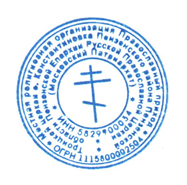
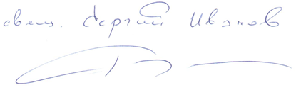

МЕСТНАЯ РЕЛИГИОЗНАЯ ОРГАНИЗАЦИЯ ПРАВОСЛАВНЫЙ ПРИХОД
ТРОИЦКОЙ ЦЕРКВИ С. КОНСТАНТИНОВКА ПЕНЗЕНСКОГО РАЙОНА ПЕНЗЕНСКОЙ ОБЛАСТИ ПЕНЗЕНСКОЙ ЕПАРХИИ РУССКОЙ ПРАВОСЛАВНОЙ ЦЕРКВИ (МОСКОВСКИЙ ПАТРИАРХАТ)
440516, Пензенская область Пензенский район, с. Константиновка, ул. Рабочая, 79А
ИНН 5829900034 КПП 582901001 ОГРН 1115800002504
р/с 40703810500010000241 ПАО Банк «Кузнецкий» г. Пенза БИК 045655707
корр/счет 30101810200000000707
Карта Сбербанк 5469530012031018
www.hram-konstantinovka.ru
<%=day%>. <%=month%>. <%=year%>г.
<%=gender%> <%=firstName%> <%=middleName%>!
В селе Константиновка Пензенского района положено начало восстановлению
жемчужины Пензенской области - Храма Живоначальной Троицы. Всё даётся с трудом.
У нас нет больших помощников и благотворителей, практически все восстановительные
работы мы выполняем сами, и уже можно воочию увидеть, как преобразился храм за эти
два года. Сегодня при храме работают две Воскресные школы, количество
воспитанников увеличилось до 42 человек. Всех деток мы бесплатно обеспечиваем
необходимыми канцелярскими товарами для занятий. Я уверен, Вы сами знаете,
насколько сейчас это сложно для сельского храма.
У нас радость! Нам предоставили 8 соток земли (20*40 м, 800 м.кв.). На этой земле
мы подготовили место для детской площадки. Зимой будет работать каток, кто-то
впервые сумеет перебороть свой страх, освоит первые уроки и прочувствует радость
полета на льду. Даст Бог - соберем хоккейную команду. Летом – волейбол и баскетбол.
На много километров от нас нет ничего подобного! Мы сможем заниматься и с детьми
соседних сёл.
В настоящее время мы подготовили площадку, засыпали щебнем. Теперь
необходимо залить её асфальтом и сделать борта. Общая стоимость работ – 328 000
рублей. Одному сельскому приходу очень тяжело собрать такую сумму.
Если у Вас есть возможность, пожалуйста, окажите ЛЮБУЮ посильную помощь.
Если перевести на метры, то стоимость одного квадратного метра катка – 410 рублей
(необходимо 800 квадратных метров).
Нам очень тяжело находить необходимые средства для восстановления храма, и,
может показаться, что площадка для детей – это лишнее. Но если мы сейчас не будем
заниматься детьми, то для кого восстанавливать святыни? Сегодня очень нужно отвлечь
(хотя бы немного!) деток от «гаджетов» и интернета.
Господь, отвечая на вопрос учеников о признаках приближающегося конца времён,
говорит: «…когда восстанут дети на родителей» (Мф.10). А ведь это может быть очень
скоро, если никто не будет ими заниматься.
Имя каждого благотворителя будет обязательно выгравировано на золотой
памятной табличке и занесено в храмовый синодик для вечного поминовения.
Храни Вас Бог!

